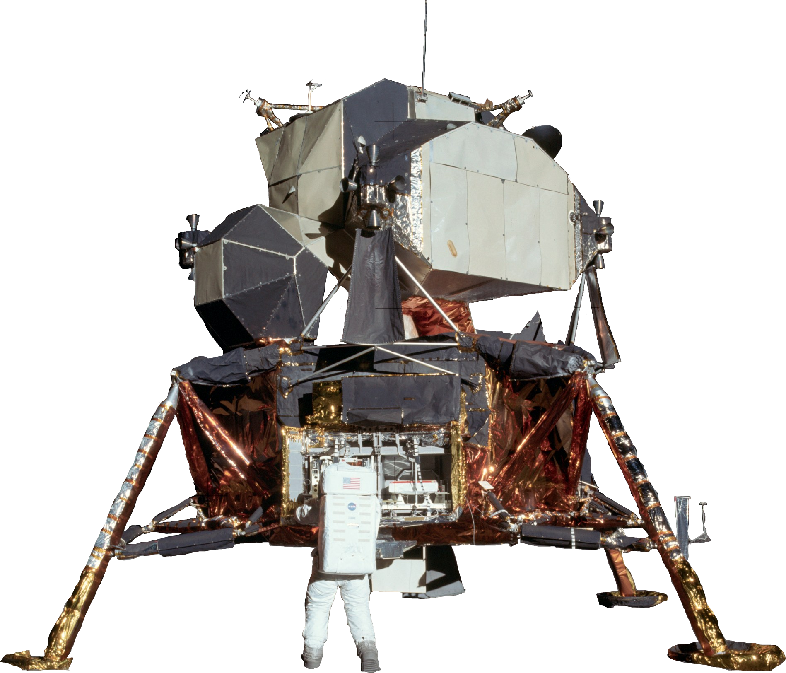

Projects
Below are some of my recent research and projects.
Flower Color Visualized Via Voronoi Polygons

Building a CNN for Moonquake Classification
A Dry Jacob’s Well: Hydrologic and Statistical Analysis
← Back to Home